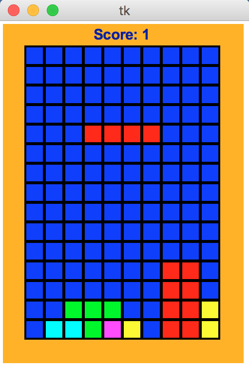

David Kosbie
Carnegie Mellon University
koz@cmu.edu
These notes assume that you are familiar with the game of
Tetris. If not, we suggest that you first read the
Wikipedia entry on Tetris
and then play the game a bit.
These notes also assume that you are familiar with Python and Tkinter as we have used them in our 15-112 course.
Here is Tetris approximately as we will write it:
applet: tetris.html
jar file: tetris.jar
zip file:
tetris.zip (which is just a zip file containing tetris.jar)
Actually, those are Java applets/programs, and we will write ours in Python, but this can give you a clear idea of our design.
As should be clear when you run it, this is a simplified version of Tetris,
and many interesting features have been left for you to add as bonus (see
step 8 for details, though also note that bonus points vary by semester).
And here is a picture of the game in action:

Our design includes two main elements: a board
and a falling piece. In the picture, the board contains all
blue (empty) cells except in the bottom three rows, where it contains
various other colors. The falling piece is the red piece in the
picture. In our design, this is not part of the board, but is
drawn over the board.
More specifically, the board
is a 2-dimensional list of color names (strings like "red", "blue",
"green"). Initially, the board is full of one color, the
emptyColor ("blue" in our sample code). As falling pieces are
transferred onto the board, other colors are introduced.
The goal of the game is to fill rows entirely with non-empty
colors.
The falling piece is a 2-dimensional list of
booleans, indicating whether the given cell is or is not painted in this
piece. For example, here is the definition of an S piece:
sPiece = [
[ False, True, True ],
[ True, True, False ]
]
As noted, the falling piece is not part of the board, but drawn over
the board. It becomes part of the board when it can no longer fall and
we place it on the board, which will not happen until several steps from now
in our design process.
The game is graphical and event-based. This is
achieved by using Tkinter as we have in previous animations.
Important debugging hint: you almost surely will want to add pausing (say, with "p"), unpausing (also with "p", or maybe "g" for "go"), stepping while pausing (with "s"), and resetting / calling init() again (say with "r"). These can be invaluable when trying to debug animations.
Many more details are available on the following pages.
|
|
David Kosbie |